유통관리사-2급 (2024-08-24 기출문제)
1과목: 유통물류일반
1. 아래 글상자 괄호 안에 알맞은 유통기관이 창출하는 가치를 순서대로 바르게 나열한 것은?
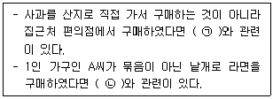
- ㉠ 탐색의 가치, ㉡ 거래횟수의 감소
- ㉠ 형태의 가치, ㉡ 탐색의 가치
- ㉠ 장소의 가치, ㉡ 형태의 가치
- ㉠ 형태의 가치, ㉡ 거래횟수의 감소
- ㉠ 장소의 가치, ㉡ 탐색의 가치
(정답률: 92%)
2. 아래 글상자의 괄호 안에 들어갈 유통의 기능으로 가장 옳은 것은?
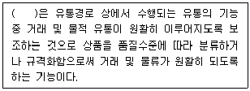
- 운송기능
- 보관기능
- 표준화기능
- 정보제공기능
- 위험부담기능
(정답률: 81%)
3. 아래 글상자에서 제조업자를 위한 도매상의 기능 설명으로 옳은 것을 모두 고르면?
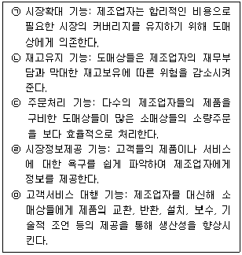
- ㉠
- ㉠, ㉡
- ㉠, ㉡, ㉢
- ㉠, ㉡, ㉢, ㉣
- ㉠, ㉡, ㉢, ㉣, ㉤
(정답률: 77%)
4. 아래 글상자 괄호 안에 알맞은 상품군별 유통기구를 순서대로 바르게 나열한 것은?
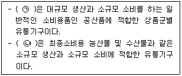
- ㉠ 분산형, ㉡ 수집ㆍ중개ㆍ분산형
- ㉠ 수집ㆍ중개ㆍ분산형, ㉡ 중개형
- ㉠ 중개형, ㉡ 수집형
- ㉠ 수집형, ㉡ 분산형
- ㉠ 분산형, ㉡ 수집형
(정답률: 49%)
5. 유통업이 산업전반에 가져오는 경제적 역할에 대한 설명으로 옳지 않은 것은?
- 다양한 소비자의 욕구를 충족시켜줄 수 있는 소비문화를 발전시킨다.
- 유통구조의 효율화를 통한 가격안정에 기여한다.
- 다양한 유통업을 통해 고용창출 효과를 가져온다.
- 생산자와 소비자를 연결시켜 주는 역할을 한다.
- 제조업 전체의 경쟁력을 제고시키는 산업발전을 도모한다.
(정답률: 37%)

6. 유통업태의 발전에 관한 이론으로 옳은 것은?
- 아코디언이론이 초점을 두고 있는 부분은 가격과 마진이다.
- 소매차륜이론은 상품믹스에만 초점을 맞추어 설명하는 한계가 있다.
- 소매수명주기이론은 한 소매기관이 등장해서 사라지는 과정을 진입단계, 발전단계, 쇠퇴단계로 설명한다.
- 진공지대이론은 소비자는 점포가 제공하는 서비스의 수준과 상품의 가격에 영향을 받는다고 설명한다.
- 변증법적이론은 장점을 가진 새로운 경쟁자가 출현하는 경우 기존의 소매업태는 완전히 모방하는 전략을 취한다고 설명한다.
(정답률: 43%)
7. 아래 글상자 내용 중 변혁적 리더십과 관련된 내용으로만 나열한 것을 모두 고르면?
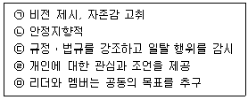
- ㉠, ㉡, ㉢
- ㉠, ㉢, ㉣
- ㉠, ㉣, ㉤
- ㉡, ㉢, ㉣
- ㉡, ㉢, ㉣, ㉤
(정답률: 78%)
8. 풀(Pull) 요인 관련 유통기업들이 글로벌 신규시장으로 진입할 때의 위협요인으로 옳지 않은 것은?
- 통화의 차이가 발생한다.
- 해외정부의 제약조건이 있다.
- 문화적 차이는 존재하지 않는다.
- 후진국 진출 시 유통시스템과 기술이 부재하다.
- 경영방식의 차이로 위협요인이 해외에서 수용이 어려울 수도 있다.
(정답률: 86%)
9. 유통산업 구조변화 요인 중 하나인 유통정보시스템 설명으로 옳지 않은 것은?
- 협의의 POS 시스템은 판매시점에서 어떤 상품이 얼마나 판매되었는지 판매정보를 파악 및 관리하는 시스템을 말한다.
- 광의의 POS 시스템은 판매정보 뿐만 아니라 발주, 재고, 배송, 매입 등 소매점포 안에서 발생하는 모든 정보를 관리하는 시스템을 말한다.
- 전자데이터교환은 기업 간에 주문을 하거나 대금청구 또는 결재 등의 다양한 업무를 처리할 때 컴퓨터로 처리할 수 있도록 구조화되어 있다.
- 데이터마이닝은 데이터베이스나 데이터웨어하우스로부터 고객의 연관성, 구매패턴, 성향 등 유용한 정보들을 추출하는 역할을 한다.
- ERP는 표준화된 양식으로 전자문서교환을 통해 서로 간 처리할 데이터를 교환하는 시스템을 말한다.
(정답률: 70%)
10. 유통산업 구조변화 요인과 관련된 소비자 욕구 및 행태적 변화 설명으로 옳지 않은 것은?
- 소비자의 생활수준이 올라감에 따라 소비자의 구매패턴이 삶의 질을 중요시하고 우선시하는 방향으로 변화되었다.
- 소비자의 욕구에도 점차 다양성과 개성이 나타나게 되었다.
- 외환위기를 거치게 되면서 낮은 가격이면서 질 좋은 제품을 추구하는 합리적인 가치중심 소비행태가 확산되었다.
- 합리적인 가치중심 소비형태가 확산되면서 가격이 상대적으로 저렴한 인터넷쇼핑이 각광을 받게 되었다.
- 소비자가 고가의 제품을 구매하는 경향이 나타나면서 고급 소비시장이 만들어졌지만 소비시장의 양극화 현상은 발생되지 않았다.
(정답률: 87%)
11. 조직의 집권화와 분권화를 결정하는 요소 중 분권화가 유리하게 되기 위한 조건으로 옳지 않은 것은?
- 의사결정의 중요성이 낮은 경우 분권화가 유리하다.
- 업무의 특성이 정적이고, 유동성의 정도가 낮은 경우 분권화가 유리하다.
- 조직의 규모가 클 경우 분권화가 유리하다.
- 소유와 경영이 분리된 기업일 경우 분권화가 유리하다.
- 일관성의 필요가 낮은 경우 분권화가 유리하다.
(정답률: 57%)
12. 아래 글상자에서 설명하는 내용으로 옳은 것은?
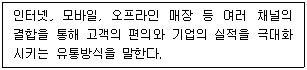
- POS
- EDI
- RFID
- Omni Channel
- SSU
(정답률: 80%)
13. 아래 글상자에서 거래비용이론상 거래비용이 높아지는 경우만을 모두 고른 것은?
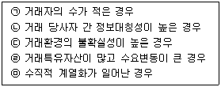
- ㉡, ㉣
- ㉣, ㉤
- ㉠, ㉢, ㉣
- ㉡, ㉢, ㉣
- ㉠, ㉡, ㉢, ㉣, ㉤
(정답률: 61%)
14. 아래 글상자에서 공통적으로 설명하는 용어로 가장 옳은 것은?
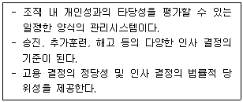
- 성과평가
- 직원보상
- 교육훈련
- 고용테스트
- 연공서열
(정답률: 83%)
15. 전통적 품질관리와 대조되는 식스시그마의 특징으로 가장 옳지 않은 것은?
- 고객만족을 목표로 한다.
- 측정지표로 불량률을 사용한다.
- 전사적 업무프로세스의 전체 최적화를 적용범위로 삼는다.
- 외부로 표출된 문제 뿐만 아니라 잠재적 문제까지 중요시한다.
- DMAIC의 실행절차를 활용한다.
(정답률: 47%)
16. 재무통제를 유효하게 하기 위한 필요 조건으로 옳지 않은 것은?
- 책임의 소재가 명확할 것
- 시정조치를 유효하게 행할 것
- 업적의 측정이 정확하게 행해질 것
- 업적평가에는 적절한 기준을 선택할 것
- 계획목표가 관련자 일부에 의해 지지되고 있을 것
(정답률: 82%)
17. 아래 글상자에서 제 원가 요소를 부과하거나 배부해서 산출하는 원가가산기준법(cost plus basis method)의 계산구조 설명으로 옳은 것을 모두 고르면?
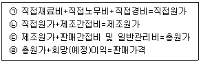
- ㉠
- ㉠, ㉡
- ㉡, ㉢
- ㉠, ㉡, ㉢
- ㉠, ㉡, ㉢, ㉣
(정답률: 63%)
18. 물류합리화를 위한 표준화의 대상에 대한 설명으로 옳지 않은 것은?
- 트럭이나 컨테이너, 철도 같은 운송표준화
- 창고나 랙, 팔레트 같은 보관표준화
- 하역설비인 컨베이어, 지게차 같은 관리표준화
- 포장 치수와 같은 포장표준화
- EDI, POS와 같은 정보표준화
(정답률: 55%)
19. 아래 글상자의 사례에 해당되는 물류활동으로 가장 옳은 것은?
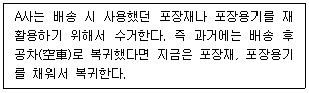
- 폐기물류
- 회수물류
- 사내물류
- 판매물류
- 반품물류
(정답률: 81%)
20. 아래 글상자의 기업 윤리와 관련된 내용 중에서 CEO가 사원에 대해 주의해야 하는 것만을 바르게 나열한 것은?
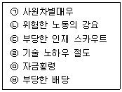
- ㉠, ㉡
- ㉢, ㉣
- ㉤, ㉥
- ㉠, ㉡, ㉢
- ㉠, ㉡, ㉢, ㉤, ㉥
(정답률: 51%)
21. 적정한 수준의 재고관리를 위해 아래 글상자의 자료를 토대로 발주시점 수량을 계산한 것으로 옳은 것은?
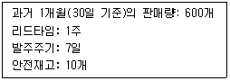
- 100
- 190
- 200
- 290
- 300
(정답률: 42%)
22. 자가창고와 영업창고의 상대적 비교 설명으로 가장 옳은 것은?
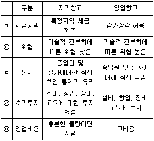
- ㉠
- ㉡
- ㉢
- ㉣
- ㉤
(정답률: 47%)
23. 물류채산분석에 대한 설명으로 가장 옳지 않은 것은?
- 비용상충분석은 이율배반적인 관계가 발생하는 경우 수익을 중심으로 비교하여 선택하는 방법이다.
- 일률적인 계산방식보다 상황에 맞는 계산방식을 활용한다.
- 물류의 원가로는 미래원가, 실제원가를 사용한다.
- 총비용접근분석법은 각 비용의 부분적인 절감이 아닌 총액의 관점에서 비용절감에 대해 분석하는 방법이다.
- 개선이나 투자가 필요한 부분을 대상으로 실시한다.
(정답률: 32%)
24. 제품에 적합한 운송방식을 선택할 때 고려해야 할 요인들 중 직접적인 특징에 해당되는 것이 아닌 것은?
- 제품의 경제적 진부화
- 제품의 가격
- 중량, 용적비
- 고객의 규모
- 제품의 수명
(정답률: 56%)
25. 유통산업발전법(시행 2023.6.28., 법률 제19117호, 2022. 12.27., 타법개정) 상 상점가진흥조합에 대한 지원 내용으로 옳지 않은 것은?
- 점포시설의 표준화 및 현대화
- 상품의 매매ㆍ보관ㆍ수송ㆍ검사 등을 위한 공동시설의 설치
- 주차장ㆍ휴게소 등 공공시설의 설치
- 판매원의 판매촉진을 위한 공동사업
- 가격표시 등 상거래질서의 확립
(정답률: 59%)
2과목: 상권분석
26. 넬슨의 입지선정 8원칙에 해당하지 않는 것은?
- 상권의 잠재력
- 입지의 성장가능성
- 누진적 흡인력
- 점포업종간의 배타성
- 부지의 경제성
(정답률: 53%)
27. 기존 점포간의 경쟁이 치열하지 않지만 기존 거주자들의 타 지역에서의 쇼핑정도가 높아 시장확장 잠재력이 커지는 상황에 대해 가장 옳게 설명하고 있는 것은?
- 소매포화지수(IRS)와 시장성장잠재력지수(MEP)가 모두 높은 경우
- 소매포화지수(IRS)와 시장성장잠재력지수(MEP)가 모두 낮은 경우
- 소매포화지수(IRS)는 높지만 시장성장잠재력지수(MEP)가 낮은 경우
- 소매포화지수(IRS)는 낮지만 시장성장잠재력지수(MEP)가 높은 경우
- 소매포화지수(IRS)와 시장성장잠재력지수(MEP)는 신규 점포 진출의 시장후보를 결정하는데 중요한 지표가 아님
(정답률: 48%)
28. 신규점포에 대한 입지후보지 상권을 분석하고자 할 때, 그 상권에 대한 상권범위를 추정하는데 사용할 수 있는 기법이 아닌 것은?
- 회귀분석(regression analysis)
- 체크리스트법(check-list method)
- 유사점포법(analog method)
- 허프(Huff)모델
- 고객분포기법(CST: customer spotting technique)
(정답률: 48%)
29. 프랜차이즈를 통한 출점이 가맹점(franchisee)인 소매점에게 제공하는 이점으로서 가장 옳은 것은?
- 무임승차
- 규모의 경제
- 로열티(royalty) 수입
- 사업 확장의 용이성
- 개점ㆍ운영의 용이성
(정답률: 70%)
30. 아래 글상자의 괄호 안에 들어갈 내용으로 가장 옳은 것은?
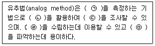
- ㉠ 상권에 영향을 미치는 요인들
- ㉡ CST(customer spotting technique) map
- ㉢ 유사점포의 임대료 수준
- ㉣ 점포 레이아웃 계획
- ㉤ 소비자들의 점포선택확률
(정답률: 54%)
31. 상권의 특성은 상권의 유형에 따라 서로 다르게 나타난다. 주변환경을 중심으로 상권을 분류할 때 상권의 유형과 일반적인 상권특징에 대한 설명으로 옳지 않은 것은?
- 역세권 상권 – 역세권 상권의 범위는 역을 중심으로 일정한 거리나 이동시간으로 정해져 있지 않으며 역의 규모, 시설 및 기능, 주변 개발상황, 다른 교통수단과의 연계성 등에 따라 다르게 설정될 수 있다.
- 아파트상권 – 점포 공급의 적정성을 판단하기 위해 세대당 상가면적을 검토해야 한다. 다른 단지나 인근 주택가와의 연계성이 높지 않은 경우가 많아 일반적으로 단지규모가 클수록 좋은 입지조건으로 판단한다.
- 주택가상권 – 단독주택, 다가구 또는 다세대주택 등의 주거형태로 이루어진다. 유동인구 보다는 인근 거주자를 중심으로 소비자가 한정되는 경우가 많고 아파트상권과 달리 근린상업지역에 해당된다.
- 사무실상권 – 사무실밀집지역에 형성된 상권을 의미하며 지역 내 거주인구가 적고 주로 직장인을 상대하므로 구매 패턴이 일정하고 매출이 점심시간이나 퇴근시간의 짧은 시간에 집중되는데 주말이나 공휴일에 매출이 급감하기도 한다.
- 대학가상권 – 대학교를 중심으로 형성되는 상권으로 대학생을 비롯한 청소년층이 주요 소비자가 되기도 한다. 대학의 학생수나 기숙사의 유무, 교통연계성 등에 따라 상권의 매력도가 달라지며 주중과 주말의 매출차가 큰 경우도 있다.
(정답률: 49%)
32. 상권설정에 비교적 간편하게 응용할 수 있는 상권구획모형인 티센다각형(Thiessen Polygon)에 대한 설명 중 옳지 않은 것은?
- 티센다각형의 크기는 경쟁수준과 비례한다.
- 시설간 경쟁정도를 쉽게 파악할 수 있다.
- 각 매장이 차별성이 없는 상품을 판매하는 것을 가정한다.
- 최근접상가 선택가설에 근거하여 상권을 설정한다.
- 하나의 상권을 하나의 매장에만 독점적으로 할당하는 방법이다.
(정답률: 40%)
33. 공간계획 측면에서 여러 층으로 구성된 백화점의 매장별 위치에 관한 설명으로 가장 옳은 것은?
- 대부분의 고객들이 왼쪽으로 돌기 때문에, 각 층 출입구의 왼편이 좋은 입지이다.
- 고객을 매장으로 유인하기 위해 충동구매 상품을 매장 안 깊숙한 곳에 배치한다.
- 일반적으로 층수가 높아질수록 매장공간의 가치가 올라간다.
- 출입구, 중심 통로, 에스컬레이터, 엘리베이터 등에서 가까울수록 유리한 위치이다.
- 백화점 매장 내 입지들의 공간적 가치는 층별 매장구성 변경의 영향은 받지 않는다.
(정답률: 72%)
34. 신규점포에 대한 상권분석에서 전통적인 규범적 모형인 중심지 이론과 관련된 내용으로 가장 옳지 않은 것은?
- 크리스탈러(W. Christaller)가 처음으로 제시하였다.
- 상업중심지의 정상이윤 확보에 필요한 최소한의 수요를 발생시키는 상권범위를 최소수요 충족거리(threshold)라고 한다.
- 가장 이상적인 배후상권의 모형은 정육각형이다.
- 중심지가 수행하는 유통서비스기능이 지역거주자들에게 제공될 수 있는 최대거리를 중심지기능의 최대도달거리(range)라고 한다.
- 한 상권 내에서 특정점포가 끌어들일 수 있는 소비자 점유율은 점포까지의 방문거리에 반비례하고 해당점포의 매력에 비례한다는 가정에서 시작한다.
(정답률: 57%)
35. 상권분석 과정에서 발견할 수 있는 소매점의 상권범위나 상권형태 등과 같은 일반적 상권 특성에 대한 설명으로 가장 옳지 않은 것은?
- 점포 주변의 도로, 경쟁점포, 하천, 지하철역 등의 영향으로 상권의 범위는 확대, 축소, 단절되기도 한다.
- 점포의 규모가 비슷하더라도 업종이나 업태에 따라 점포들의 상권범위는 차이를 보인다.
- 특정 지역 경쟁점포들간의 입지조건에 변화가 없어도 상권의 범위는 다양한 영향요인에 의해 유동적으로 변화하기 마련이다.
- 기존 점포들의 상품구색이 유사해도 판촉활동이나 광고활동의 차이에 따라 점포들 간의 상권범위가 일시적으로 변화한다.
- 점포를 둘러싼 상권의 형태는 대부분 점포를 중심으로 일정거리 이내를 포함하는 동심원의 형태로 나타난다.
(정답률: 62%)
36. 상점을 신축할 때는 용적률(容積率, Floor Area Ratio)기준을 고려해야 한다. 용적률 산정에서 제외되는 면적이 아닌 것은?
- 지하층 면적
- 그 건물의 부속용도인 지상층 주차 면적
- 경사지붕 아래에 설치하는 대피공간 면적
- 초고층 및 준초고층 건축물의 피난안전구역 면적
- 하나의 대지에 건축물이 둘 이상 있는 경우 별도 건물의 면적
(정답률: 56%)
37. 소매점을 운영하려면 영업개시 전에 운영 업종에 대한 인허가를 취득해야 한다. 편의점, 의류매장, 문구점 등 완제품을 판매하는 일반도소매점이 취득해야 하는 인허가에 대한 설명으로서 가장 옳은 것은?
- 영업신고가 필요하다.
- 영업등록이 필요하다.
- 영업허가가 필요하다.
- 영업 신고와 등록이 모두 필요하다.
- 사업자등록이 필요하다.
(정답률: 48%)
38. 구체적인 입지조건을 평가하는 과정을 통해 점포의 입지결정이 이루어진다. 점포의 입지조건에 대한 일반적 평가로 그 내용이 가장 옳은 것은?
- 점포 출입구 부근에 단차가 없으면 사람과 물품의 출입이 불편해진다.
- 건축선 후퇴(setback)는 직접적으로 가시성에 부정적인 영향을 미친다.
- 점포의 형태는 점포의 정면너비에 비해 깊이가 더 크면 바람직하다.
- 점포면적이 커지면 매출도 증가하는 경향이 있어 규모가 클수록 좋다.
- 점포의 형태는 데드 스페이스(dead space) 발생 가능성이 큰 직사각형이 좋다.
(정답률: 55%)
39. 공간균배의 원리에서 제안하는 집심성 점포의 입지로서 가장 옳은 것은?
- 노면 독립입지
- 도시 중심 상업지역
- 지구 중심 상업지역
- 근린 중심 상업지역
- 역세권 중심 상업지역
(정답률: 61%)
40. 예상매출액을 추정하거나 소매상권의 범위를 파악하기 위해 활용할 수 있는 허프(D. L. Huff) 모형의 개념과 특징에 대한 설명으로 가장 옳지 않은 것은?
- 소비자가 느끼는 특정 점포의 효용은 점포크기와 점포까지의 거리 두 가지 변수만으로 결정된다고 가정한다.
- 점포면적에 대한 민감도와 점포까지의 거리에 대한 민감도는 상권에 따라 달라질 수 있다.
- 개별 점포의 효용을 추정할 때 소비자와 점포의 물리적 거리를 시간 거리로 대체하여 계산할 수 없다.
- 특정 점포의 효용이 경쟁점포보다 클수록 그 점포가 선택될 가능성이 높아진다고 가정한다.
- 루스(Luce)의 선택공리를 바탕으로 하며 많은 상권분석 기법들 중에서 대표적인 확률적 모형이다.
(정답률: 54%)
41. 아래 글상자에서 설명하는 입지유형으로 가장 옳은 것은?
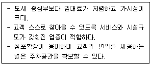
- 편의형 쇼핑센터
- 산재성 점포 입지
- 도심입지
- 노면독립입지
- 복합용도 개발지역
(정답률: 55%)
42. 아래 글상자에서 제시하고 있는 최근 이사한 소비자 C의 사례에 허프(D. L. Huff)의 수정모형을 적용하였을 때, 이사 전에서 후의 소비자 C의 소매지출에 대한 소매단지 A의 점유율 변화로 가장 옳은 것은?
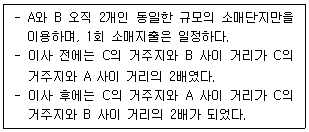
- 5분의 1로 감소한다.
- 4분의 1로 감소한다.
- 4배 증가한다.
- 5배 증가한다.
- 변화 없다.
(정답률: 66%)
43. 점포개점을 위해 예상매출을 추정하는 방식으로 가장 옳지 않은 것은?
- 인근 경쟁점 또는 유사지역 점포의 평당 매출을 적용하여 추정할 수 있다.
- 자사 점포 및 경쟁점의 객단가를 기초로 한 예상고객수를 감안하여 매출을 추정할 수 있다.
- 소비자 면접이나 실사를 통해 유사점포 상권범위를 추정한 결과를 이용하여 신규점포의 예상매출을 추정할 수 있다.
- 유사점포의 상권 구역별 매출액을 적용하여 신규점포의 매출액을 추정한다.
- 유사점포의 기간별 매출실적 추이는 시계열분석을 실시하고 체크리스트를 활용하여 예상 매출액을 추정할 수 있다.
(정답률: 54%)
44. 가맹사업거래의 공정화에 관한 법률(약칭: 가맹사업법)(법률 제20239호, 2024.2.6., 타법개정) 및 그 시행령에서는 상권과 관련하여 '가맹본부가 가맹계약 갱신과정에서 상권의 급격한 변화 등 대통령령으로 정하는 사유가 발생하여 기존 영업지역을 변경하기 위해서는 가맹점 사업자와 합의하여야 한다.'고 규정하고 있다. 이때 상권의 급격한 변화 등 대통령령으로 정하는 사유가 발생하는 경우에 해당하지 않는 경우는 어느 것인가?
- 재건축, 재개발 등으로 인하여 상권의 급격한 변화가 발생하는 경우
- 신도시 건설 등으로 인하여 상권의 급격한 변화가 발생하는 경우
- 해당 상권의 거주인구가 현저히 변동되는 경우
- 해당 상권의 유동인구가 현저히 변동되는 경우
- 가맹본부의 전략변화로 인하여 해당 상품ㆍ용역에 대한 수요가 현저히 변동되는 경우
(정답률: 62%)
45. 쇼핑몰의 소매입지로서의 상대적 장점으로 가장 옳지 않은 것은?
- 계획에 의한 입점점포 구성의 강력한 통제
- 입점점포 간 영업시간 등 영업방침의 동질성
- 강력한 핵점포의 입점이 유발하는 높은 고객흡인력
- 구색과 기능의 다양성이 창출하는 높은 고객흡인력
- 관리를 통해 유지되는 입점점포들 사이의 낮은 경쟁
(정답률: 56%)
3과목: 유통마케팅
46. 아래 글상자에서 설명하는 시장표적화 전략으로 가장 옳은 것은?
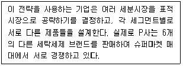
- 대량마케팅(mass-marketing)
- 차별적 마케팅(differentiated marketing)
- 집중적 마케팅(concentrated marketing)
- 미시마케팅(micro marketing)
- 지역마케팅(local marketing)
(정답률: 54%)
47. 시장세분화를 위한 주요 세분화 변수 중 심리묘사적 변수로 가장 옳은 것은?
- 생활양식
- 사용상황
- 사용률
- 충성도 수준
- 추구혜택
(정답률: 40%)
48. 소매업체의 경쟁 우위를 창출하는 요소로 가장 옳지 않은 것은?
- 소매업체의 규모로 인한 비용우위
- 소매업체의 높은 브랜드 인지도에 기반한 공급업체와의 교섭력
- 높은 고정비 지출에 기반한 신규투자 촉진
- 독특한 점포 컨셉에 기반한 높은 고객충성도
- 상권 내에서의 좋은 입지의 선점
(정답률: 68%)
49. 소셜 커머스의 한 유형으로서 관심 지역의 서비스 혹은 온라인 상의 상품 및 서비스를 일정인원 이상이 구입하면 상품가격 할인폭이 높아지는 형태의 비즈니스 모델로 옳은 것은?
- 플래시 세일(flash sale)
- 위치기반 소셜 앱(LBS social apps)
- 공동구매(group buy)
- 구매 공유(purchase sharing)
- 소셜 큐레이션(social curation)
(정답률: 71%)
50. 지역경제통합의 유형 중 자유무역지역에 대한 설명으로 가장 옳은 것은?
- 해당 지역 내에 있는 모든 국가 간에 각종 무역장벽을 없애는 반면, 비회원국에 대해서는 각 국가마다 독자적인 무역규제를 하는 통합유형이다.
- 회원국 간에 무역장벽을 없애는 동시에 비회원국에 대해서도 동일한 관세정책을 취하는 통합유형이다.
- 회원국 간에 재화 뿐만 아니라 생산 요소까지 자유로운 이동을 보장하는 통합유형이다.
- 공통의 통화를 가지고 구성 국가 간의 세율도 동일하게 적용하는 통합유형이다.
- 구성 국가 간에 경제적인 면에서 통합할 뿐만 아니라 나아가 정치적인 측면도 통합하는 통합유형이다.
(정답률: 50%)
51. 단 하나의 제품만을 출시하기보다는 여러 개의 제품들로 상품라인을 구성하는 전략의 타당성으로서 가장 옳지 않은 것은?
- 고객들의 욕구 이질성
- 고객들의 가격민감도 차이
- 경쟁자의 시장진입 저지
- 자기잠식 관리
- 고객들의 다양성 추구 성향
(정답률: 57%)
52. 상품기획 과정에서 상품구색을 계획할 때 직접적으로 고려해야 할 요인으로 가장 옳지 않은 것은?
- GMROI에 대한 상품구색의 영향
- 카테고리간의 상호보완성
- 고객의 구매행동에 대한 상품구색의 영향
- 점포의 물리적 특징
- 기술적 인프라의 수준
(정답률: 42%)
53. 아래 글상자의 괄호 안에 들어갈 용어로 가장 옳은 것은?
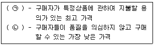
- ㉠ 준거가격, ㉡ 유보가격
- ㉠ 유보가격, ㉡ 최저수용가격
- ㉠ 최저수용가격, ㉡ 유보가격
- ㉠ 준거가격, ㉡ 최저수용가격
- ㉠ 유보가격, ㉡ 준거가격
(정답률: 47%)
54. 소셜미디어에서 광고가 1,000회 노출되는 데 소요되는 광고비용을 지칭하는 용어로 가장 옳은 것은?
- CTR (click-through rate)
- CVR (conversion rate)
- CPC (cost per click)
- CPM (cost per mille)
- CPA (cost per action)
(정답률: 44%)
55. 시장에 도입되는 초기에 제품가격을 낮게 설정하고 점진적으로 가격을 인상하는 방식의 가격설정 전략으로 옳은 것은?
- 종속가격 전략(captive pricing strategy)
- 스키밍 전략(skimming pricing strategy)
- 침투가격 전략(penetration pricing strategy)
- 고저가격 전략(high-low pricing strategy)
- 상시저가 전략(every day low price strategy)
(정답률: 61%)
56. 아래 글상자의 설명을 모두 포함하는 고객데이터로 가장 옳은 것은?
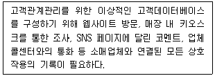
- 거래 정보
- 고객접점 정보
- 고객선호 정보
- 인구통계적 정보
- 심리적 정보
(정답률: 54%)
57. 검색엔진 최적화를 위한 키워드 조사에 대한 설명으로 가장 옳지 않은 것은?
- 검색엔진 최적화는 소비자가 어떤 키워드로 검색하는 지를 알아내는 것이 중요하다.
- 판매하려는 제품이나 서비스와 관련하여 검색하는 유관 키워드 또한 파악해야 한다.
- 검색한 소비자가 궁극적으로 얻고자 하는게 무엇인지 고민해야 한다.
- 키워드는 온라인마케팅 전반에 활용되므로 불특정 다수를 중심으로 조사해야 한다.
- 경쟁기업이 어떤 메시지와 키워드를 사용하는지 경쟁사 키워드 조사도 필요하다.
(정답률: 62%)
58. 유통표준코드에 대한 설명으로 가장 옳지 않은 것은?
- 일반적으로 많이 사용되는 코드는 바코드로, 공통적으로 상품의 코드를 관리하기 위한 국제적으로 표준화 된 숫자 기호이다.
- 바코드는 유럽상품코드와 마찬가지로 13개의 숫자로 구성되는데 첫 3자리는 국가코드에 해당된다.
- 제조업체 코드 6자리와 상품코드 3자리는 대한상공회의소 유통물류진흥원(GS1 Korea)에서 고유번호를 부여한다.
- 상품코드는 제조업체에서 취급하는 상품에 부여하는 코드로, 편의품, 선매품, 전문품에 따라 다른 번호가 부여된다.
- 마지막 한 자리는 체크숫자로 판독오류 방지를 위해 만들어진 코드이다.
(정답률: 33%)
59. 아래 글상자에서 공통적으로 설명하는 촉진수단으로 가장 옳은 것은?
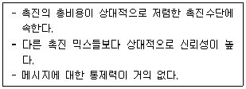
- 광고
- 인적판매
- 판매촉진
- 홍보
- 직접마케팅
(정답률: 42%)
60. 아래 글상자에서 설명하는 로그분석을 위한 측정단위로 가장 옳은 것은?
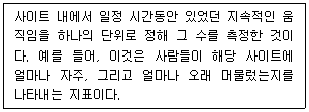
- 순방문자(unique user)
- 히트(hit)
- 페이지뷰(page view)
- 방문자(visitor)
- 세션(session)
(정답률: 45%)
61. 매장 환경 구성 및 관리에 대한 설명으로 가장 옳지 않은 것은?
- 잠재고객이 무리한 노력을 기울이지 않더라도 상품을 쉽게 찾을 수 있도록 구성해야 한다.
- 누구를 위한 매장이며 무엇을 판매하고 있는지 명확하게 표현하여야 한다.
- 다층점포의 경우 수직 이동시설과 인접한 공간을 고객편의공간으로 구성하여 고객편의성을 강화해야 한다.
- 사고에 대한 사전 예방 시설을 갖추고 사고 조치나 대책이 포함된 작업환경을 마련해야 한다.
- 후방시설의 창고는 판매영역과 구분하여 구역화하고 상품 정리 시 낱개 상품이 보관되지 않도록 한다.
(정답률: 42%)
62. 인적판매에 대한 설명으로 가장 옳지 않은 것은?
- 인적판매는 고객과 직접적인 커뮤니케이션을 통해 상품을 판매하고 고객과의 관계를 구축하는 일련의 활동이다.
- 인적판매는 광고, 홍보, 판매촉진에 비해 개별적이고심도있는 쌍방향 커뮤니케이션이 가능하다.
- 인적판매는 회사의 궁극적인 목적인 수익창출을 실제로 구현하는 역할을 수행한다.
- 인적판매는 고객과 직접적인 접점을 형성한다.
- 제조업자가 풀(Pull) 정책을 쓸 경우 가장 적극적으로 활용하는 촉진 수단이다.
(정답률: 67%)
63. 아래 글상자에서 설명하는 기법으로 가장 옳은 것은?
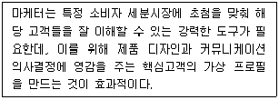
- 포지셔닝 매트릭스
- 가치 제안 캔버스
- 포커스 그룹 인터뷰
- 구매자 페르소나
- 고객 여정 맵
(정답률: 59%)
64. 아래 글상자에서 설명하는 용어로 가장 옳은 것은?
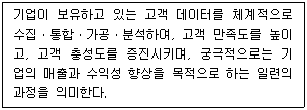
- SCM (Supply Chain Management)
- ERP (Enterprise Resource Planning)
- KMS (Knowledge Management System)
- BPM (Business Process Management)
- CRM (Customer Relationship Management)
(정답률: 70%)
65. 유통마케팅 조사방법 중 표적집단면접법(FGI)에 대한 설명으로 가장 옳지 않은 것은?
- 소수의 응답자를 대상으로 하나의 장소에서 진행한다.
- 특정 기준에 따라 주제에 관심이 있거나 관련 경험이 있는 소수의 참가자를 선정한다.
- 응답자들끼리 편하게 대화를 진행하게 한다.
- 대화가 주제를 벗어나는 경우만 사회자가 최소한 개입한다.
- 조사자와 응답자가 자유롭고 심도있는 질의응답을 진행한다.
(정답률: 39%)
66. 마케팅 조사에 대한 설명으로 가장 옳지 않은 것은?
- 기술 조사(descriptive research)는 표적모집단이나 시장의 특성에 관한 자료를 수집ㆍ분석하고 결과를 기술하는 조사이다.
- 2차 자료(secondary data)는 당면한 조사목적이 아닌 다른 목적을 위해 과거에 수집되어 이미 존재하는 자료이다.
- 1차 자료(primary data)는 당면한 조사목적을 달성하기 위하여 조사자가 직접 수집한 자료이다.
- 모든 마케팅 조사에는 2차 자료(secondary data)가 필수적으로 제시되어야 한다.
- 탐험 조사(exploratory research)는 조사문제가 불명확할 때 기본적인 통찰과 아이디어를 얻기 위해 실시되는 조사이다.
(정답률: 64%)
67. 유통경로의 성과평가를 위한 항목 중 유통경로의 효과성에 대한 평가항목으로 가장 옳지 않은 것은?
- 고객의 전반적인 만족도
- 신시장 개척 건수 및 비율
- 중간상의 거래 전환 건수
- 단위당 총 물류비용
- 클레임(claim) 건수
(정답률: 25%)
68. 격자형(grid) 레이아웃에 대한 설명으로 옳지 않은 것은?
- 고객들의 주 통로와 직각을 이루고 있는 여러 단으로 구성된 선반들이 평행으로 늘어서 있는 형태의 레이아웃을 의미한다.
- 고객들의 주 통로와 여러 점포들의 입구가 연결되어 있는 형태의 레이아웃을 의미한다.
- 대형마트, 편의점, 전문점 등 다양한 소매 업태에서 주로 활용되고 있다.
- 상품을 쉽게 찾을 수 있고, 고객들의 질서 있는 이동을 촉진시켜 공간을 효율적으로 사용할 수 있는 장점이 있다.
- 딱딱하고 사무적인 분위기를 연출하는 단점이 있다.
(정답률: 55%)
69. 상품에 표기되는 유통기한에 대한 설명으로 옳지 않은 것은?
- 일반적으로 유통기한은 '0000년, 00월, 00일 까지'로 표시된다.
- 매장에서 판매하는 삼각김밥이나 도시락류 같은 식품은 년, 월, 일, 시까지 표시해야 한다.
- 유통기한이 서로 다른 제품을 함께 포장했을 때는 그중 가장 짧은 유통기한을 적용하여 표시해야 한다.
- 가공소금이나 설탕, 아이스크림 같은 빙과류는 유통기한 생략이 가능하다.
- 소매점에서 소분 및 처리해 재포장한 생선, 고기류는 재포장 후 일주일까지를 유통기한으로 표시한다.
(정답률: 43%)
70. 점포 구성요소에 관한 내용으로 가장 옳지 않은 것은?
- 점포 입지와 매장 배치의 편리성
- 점포 외관 이미지와 점포 내부 인테리어
- 목표 소비자의 이미지와 분위기
- 목표 고객에게 소구하는 상품 구성과 적합한 가격대
- 점포의 기본 설비와 시설, 진열집기 및 디스플레이
(정답률: 58%)
4과목: 유통정보
71. 대표적인 반정형데이터로, 웹과 컴퓨터 프로그램에서 용량이 적은 데이터를 교환하기 위해 데이터 객체를 속성(attribute)과 값(value)의 쌍 형태로 나열해서 표현하는 형식을 지칭하는 용어로 가장 옳은 것은?
- JSON
- XML
- API
- FILES
- LOG
(정답률: 33%)
72. 아래 글상자의 괄호 안에 들어갈 정보기술로 가장 옳은 것은?
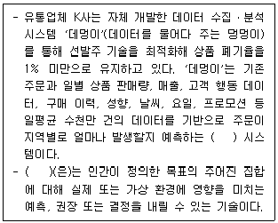
- 블록체인
- 무인로봇
- 인공지능
- 모빌리티
- 메타버스
(정답률: 67%)
73. 지식발견 접근방법을 기능에 따라 분류(Classification), 연합(Association), 배열(Sequence), 클러스터(Cluster)로 나눌 경우 아래 글상자의 내용 중에서 배열에 대한 설명을 모두 나열한 것으로 옳은 것은?
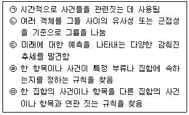
- ㉠, ㉡
- ㉠, ㉢
- ㉠, ㉣
- ㉡, ㉢, ㉣
- ㉡, ㉢, ㉤
(정답률: 42%)
74. 신규고객을 획득하기 위해 CRM시스템의 고객정보를 활용한 분석을 수행하고자 한다. 고객의 전화나 인터넷 게시판을 통한 문의, 영업소 방문 등의 내용을 바탕으로 하는 분석을 지칭하는 용어로 가장 옳은 것은?
- 고객 프로필 분석
- 하우스-홀딩 분석
- 현재 고객 구성원 분석
- 인바운드 고객 분석
- 외부 데이터 분석
(정답률: 67%)
75. 유통업체에서의 CRM 시스템 활용에 대한 설명으로 옳지 않은 것은?
- 유통업체에서는 CRM 시스템을 활용해서 신규고객 창출, 기존고객 유지, 충성고객 개발에 활용하고 있다.
- 유통업체에서 CRM 시스템은 장기적인 측면보다는 철저하게 단기적인 측면에서 매출 증대를 위해 활용되고 있다.
- CRM 시스템은 고객 데이터에 대한 다양한 분석을 통해 고객에 대한 이해도를 높여준다.
- CRM 시스템은 유통업체의 경쟁우위 창출에 도움을 제공한다.
- CRM 시스템은 유통업체의 판매, 서비스, 영업 업무 수행에 도움을 제공한다.
(정답률: 75%)
76. 판매시점관리시스템에 대한 설명으로 가장 옳지 않은 것은?
- 판매 시점의 정보를 실시간으로 취합해서 관리할 수 있도록 지원하는 시스템이다.
- 유통업체의 경우 인기제품, 비인기 제품의 신속한 파악이 가능하고, 실시간으로 재고 파악이 가능하다.
- 판매시점에 시스템을 통한 정보 입력으로 처리속도 증진, 오타 및 오류 방지 등의 효과를 얻을 수 있다.
- 품목별 판매실적, 판매실적 구성비 등 판매시점관리시스템에 누적된 판매정보로 다양한 분석이 가능하다.
- 상품 판매 정보만 관리하기 때문에 고객분석에는 활용되지 않는다.
(정답률: 73%)
77. GS1 국제 표준 기구의 3대 사상의 하나인 공유 표준 중에서 아래 글상자에서 설명하는 용어로 가장 옳은 것은?
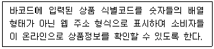
- GS1 Digital Link
- GS1 Web Vocabulary
- GDM (Global Data Model)
- GS1 Mobile Ready Hero Images
- GDSN (Global Data Synchronization Network)
(정답률: 46%)
78. 아래 글상자의 신규고객 창출 과정을 순서대로 제시한 것으로 가장 옳은 것은?
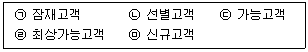
- ㉠ - ㉡ - ㉢ - ㉣ - ㉤
- ㉠ - ㉡ - ㉣ - ㉤ - ㉢
- ㉠ - ㉢ - ㉡ - ㉣ - ㉤
- ㉡ - ㉢ - ㉤ - ㉣ - ㉠
- ㉤ - ㉡ - ㉢ - ㉠ - ㉣
(정답률: 59%)
79. QR코드에 대한 설명으로 가장 옳지 않은 것은?
- QR코드는 일본 도요타 자동차의 자회사 덴소 웨이브가 표준화한 기술이다.
- Micro QR코드의 가장 큰 특징은 위치 찾기 심볼이 하나인 것이며, QR코드보다 더 작은 공간에 인쇄할 수 있다.
- iQR코드는 종래의 QR코드보다 더 많은 정보량을 저장할 수 있다.
- QR코드는 오류복원 기능을 가지고 있어서 일부 코드가 손상되더라도 데이터를 복원할 수 있다.
- 데이터의 양이 증가해도 QR코드를 구성하는 셀(cell)은 정해져 있기 때문에 QR코드의 크기는 일정하다.
(정답률: 44%)
80. EDI 도입에 따른 효과에 대한 내용으로 가장 옳지 않은 것은?
- 업무처리 비용 절감
- 표준화와 암호화로 조직 내 또는 조직 간 연결성 낮춤
- 고객관계의 증진
- 문서거래시간의 단축
- 업무처리 오류 감소
(정답률: 66%)
81. 전자상거래에서의 프라이버시 보호행동에 대한 설명으로 가장 옳지 않은 것은?
- 일반적으로 전자상거래 고객들은 프라이버시에 대한 염려가 발생하면, 프라이버시를 보호하려는 행동을 한다. 전자상거래 고객들의 프라이버시 보호에 대한 반응은 정보제공 활동, 개인 활동, 공개 활동으로 구분할 수 있다.
- 전자상거래 고객의 프라이버시 보호에 대한 방어적인 태도는 마케팅 담당자가 감수해야 할 비용을 감소시키고, 기업의 고객관계관리 활동을 보다 효과적으로 촉진되도록 도움을 제공한다.
- 전자상거래 고객들이 프라이버시에 대한 염려를 회피하기 위한 대표적인 정보제공 활동으로는 개인정보제공을 거부하는 행동이다.
- 전자상거래 고객들이 프라이버시에 대한 염려를 회피하기 위한 대표적인 개인 활동으로는 개인정보 제공이 위험하다고 이야기하는 행동이다.
- 전자상거래 고객들이 프라이버시에 대한 염려를 회피하기 위한 대표적인 공개 활동으로는 기업에 직접적으로 불평하는 행동이다.
(정답률: 58%)
82. ERP시스템 구축을 위한 라이프사이클을 계획 → 패키지선정 → 구현 → 유지보수로 구분할 경우 패키지 선정단계에서 이루어지는 활동으로 가장 옳지 않은 것은?
- 시장조사
- 현업 요구사항 분석
- 레퍼런스 사이트 방문
- 소프트웨어 데모 및 차이 분석
- 컨피규레이션(configuration) 결정
(정답률: 45%)
83. u커머스(ubiquitous commerce)의 특징 중에서 아래 글상자의 내용에 부합하는 특성으로 가장 옳은 것은?
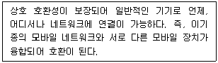
- 보편성
- 접근성
- 조화성
- 차별성
- 편재성
(정답률: 32%)
84. 고객이 주문한 상품이 목적지에 도착하기까지의 과정에서 고객 만족도 증대를 위해 유통업체가 활용하는 배송 품질차별화 전략으로 가장 옳은 것은?
- 푸시 전략
- 퍼스트 마일 배송 전략
- 스마트 로지스틱 전략
- 라스트 마일 배송 전략
- 공급망 동기화 전략
(정답률: 54%)
85. 아래 글상자 설명은 유통업체의 정보시스템 구현과 관련된 설명이다. 괄호 안에 들어갈 개념으로 가장 옳은 것은?
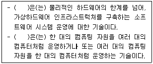
- 서비스 수준관리
- 엣지 컴퓨팅
- 블록체인
- 분산 처리
- 가상화 기술
(정답률: 28%)
86. 오늘날 유통업체에서는 마케팅을 위해서 메타버스를 활용하고 있다. 메타버스에 대한 설명으로 적절하지 않은 것은?
- 가속연구재단(ASF: Acceleration Studies Foundation)은 메타버스 서비스를 정보표현 형태(외부 환경 정보와 개인/개체 중심 정보)와 공간활용 특성(현실공간과 가상공간)에 따라 4가지로 구분하였다.
- 가상현실은 현실 세계에 가상의 정보를 증강하여 서비스를 제공하는 메타버스 유형이다.
- 라이프로깅은 개인 및 개체들에 대한 현실생활의 정보를 가상세계에 증강하여 정보를 통합 제공하는 메타버스유형이다.
- 거울세계는 가상세계에서 외부의 환경정보를 통합하여 서비스를 제공하는 메타버스 유형으로 실제세계의 디지털화라 할 수 있다.
- 가상세계는 가상공간에서 다양한 개인 및 개체들의 정보를 제공하는 메타버스 유형이다.
(정답률: 43%)
87. 인공지능이 비즈니스에서 필요한 이유로 가장 옳지 않은 것은?
- 인공지능은 인간 전문가가 가지는 시간적ㆍ공간적 한계를 뛰어넘을 수 있도록 전문지식을 저장하여 상황에 적절한 의사결정을 내리도록 도움을 준다.
- 생성형AI를 활용한 프롬프트 형태의 서비스는 문제해결에 도움이 되는 정보를 짧은 시간에 얻을 수 있어 업무효율을 높여주는 효과를 얻을 수 있다.
- 강한인공지능을 활용한 사례인 알파고, 닥터와슨 등은 인간을 뛰어넘는 결정을 지원하기 때문이다.
- 약한인공지능 기술은 특정분야에 인간의 지능을 흉내내어 신속하게 문제를 해결할 수 있는 방안을 제시해 준다.
- 복잡한 상황에서 빠른 판단과 결정에 도움이 되는 결과를 받을 수 있어 의사결정에 활용할 수 있다.
(정답률: 38%)
88. 오늘날 유통업체에서는 클라우드 컴퓨팅 이용이 증가하고 있다. 클라우드 컴퓨팅에서 제공하는 서비스 중에서 사용자가 소프트웨어를 개발할 수 있는 토대를 제공해 주는 서비스 모델로 가장 옳은 것은?
- DaaS
- IaaS
- NaaS
- PaaS
- SaaS
(정답률: 36%)
89. 기업들이 소셜 미디어 플랫폼에서 이루어지는 브랜드, 제품, 산업, 또는 특정 주제와 관련된 온라인 대화, 토론, 언급에 관심을 가지고 데이터 수집ㆍ분석을 통해 고객의 니즈를 파악하고 통찰력을 얻는 활동을 수행하고 있다. 이러한 활동을 가리키는 용어로 가장 옳은 것은?
- SNPS(Social Net Promoter Score)
- FGI(Focus Group Interview)
- 소셜리스닝(Social Listening)
- 워크숍(Workshop)
- SOV(Share of Voice)
(정답률: 62%)
90. 고객충성도 프로그램 유형의 하나로 아래 글상자에서 설명하는 서비스 제도의 종류로 가장 옳은 것은?
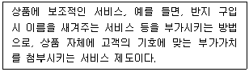
- 공동(cooperate)
- 머천다이징(merchandising)
- 메인터넌스(maintenance)
- 컨비니언스(convenience)
- 프라이비트(private)
(정답률: 47%)